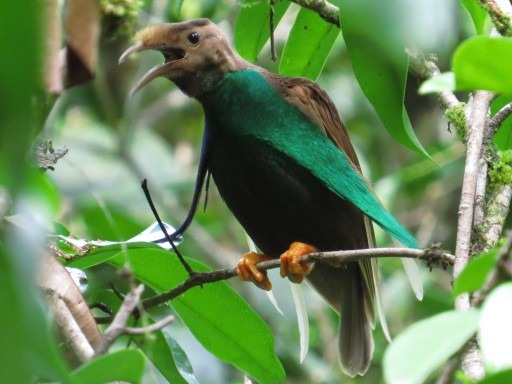
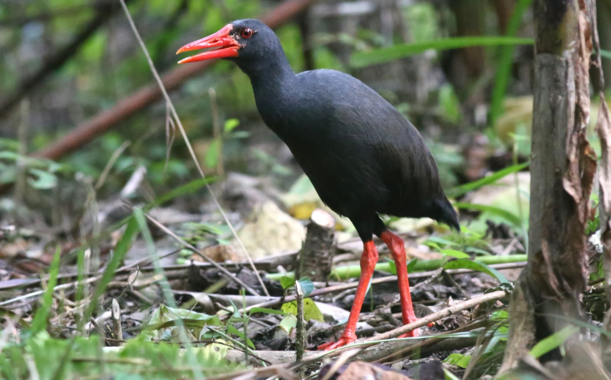
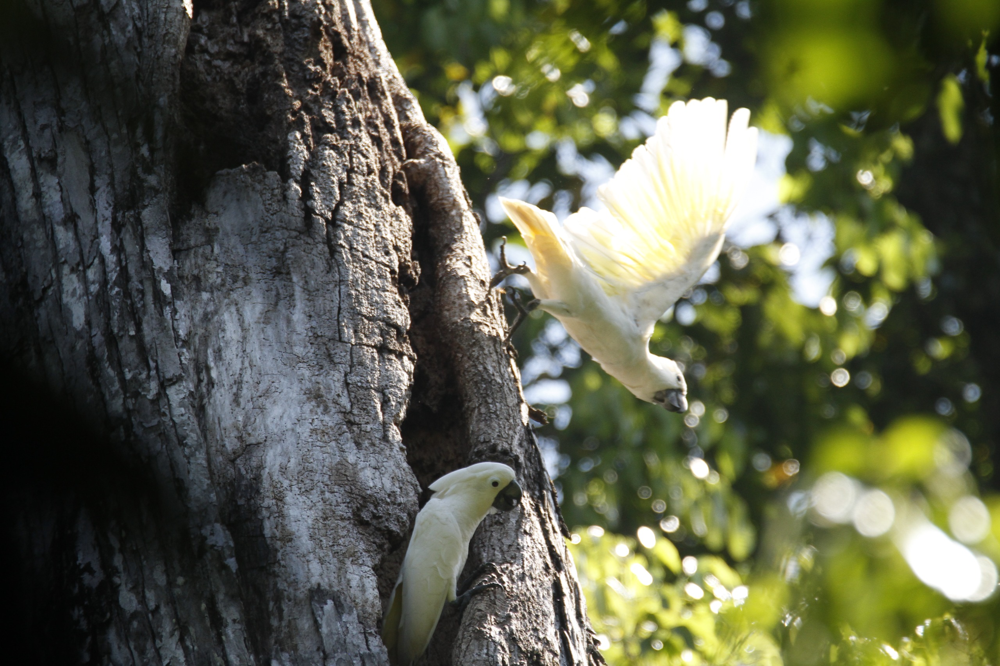
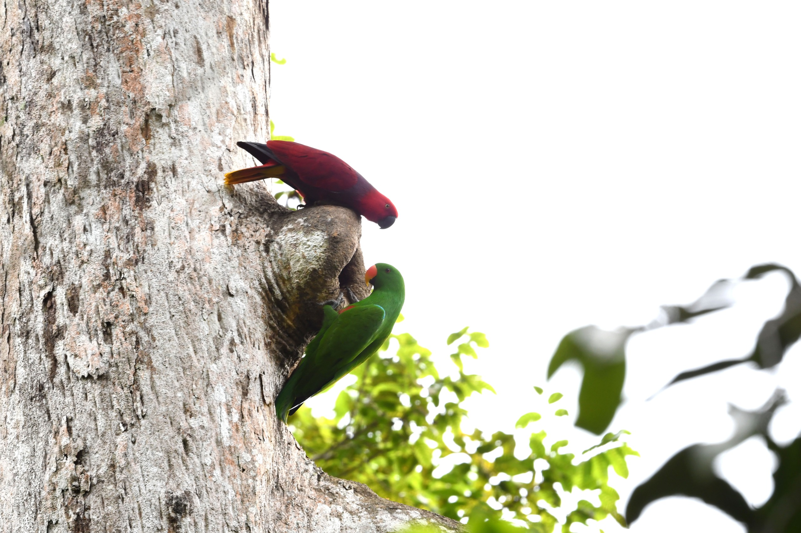
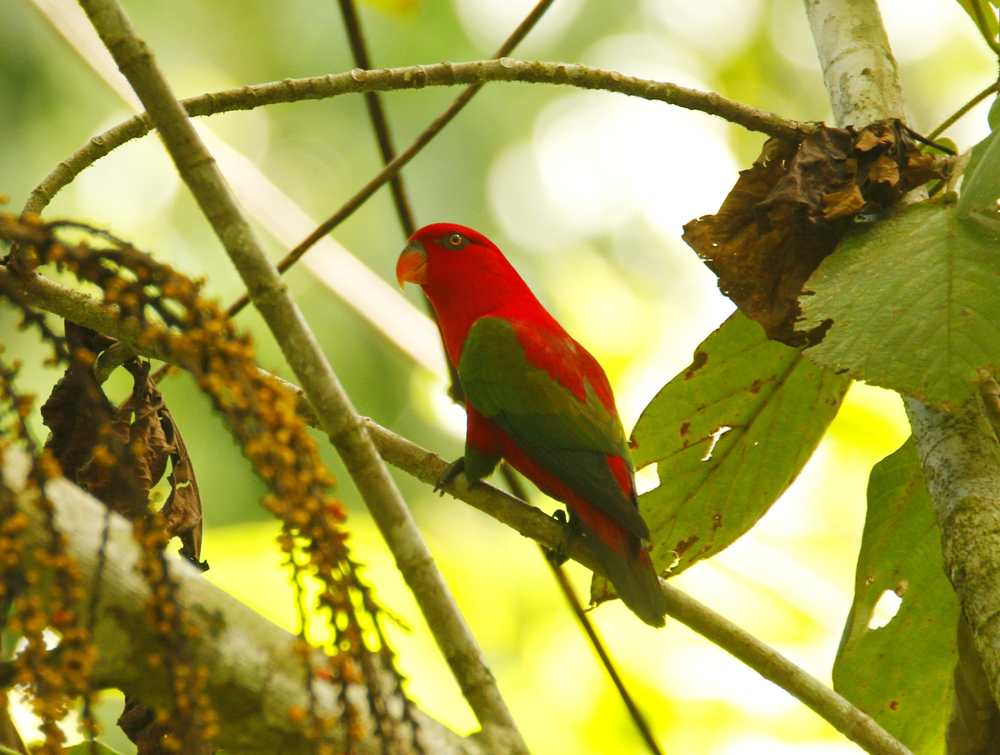

Mitra Strategis & Kolaborasi
Melestarikan kekayaan hayati di jantung Maluku Utara. Aketajawe Lolobata adalah rumah bagi spesies endemik langka, hutan hujan tropis yang murni, dan keindahan alam yang tak terbatas.
Keanekaragaman hayati yang unik, mulai dari Burung Bidadari hingga satwa langka lainnya yang hanya ada di sini.





Melalui tiga pilar utama pengelolaan taman nasional untuk keberlanjutan ekosistem dan kesejahteraan masyarakat.
Patroli rutin dan pengamanan kawasan dari gangguan hutan untuk memastikan ekosistem tetap terjaga dari ancaman ilegal.
Penelitian dan pemantauan populasi satwa kunci seperti Burung Bidadari Halmahera dan Kakatua Putih.
Prosedur resmi untuk memasuki kawasan sesuai peraturan yang berlaku.
Setiap individu, lembaga, maupun korporasi yang akan melakukan aktivitas di dalam kawasan konservasi wajib memiliki izin resmi berupa Surat Izin Masuk Kawasan Konservasi (SIMAKSI) atau izin terkait lainnya yang sah. Seluruh prosedur dan legalitas perizinan di kawasan ini dilaksanakan berdasarkan landasan hukum yang berlaku, antara lain:
Secara spesifik, jenis perizinan dan aktivitas yang diatur dibagi ke dalam tiga kategori utama berikut:
Izin ini ditujukan bagi pengunjung umum yang ingin melakukan aktivitas rekreasi atau kegiatan terbatas di dalam kawasan.
SIMAKSI bersifat khusus untuk aktivitas non-reguler dengan tujuan strategis, ilmiah, maupun dokumentasi jurnalistik.
Wajib bagi pihak yang memanfaatkan aset visual untuk kepentingan komersial serta penggunaan perangkat udara.
Apa kata mereka yang telah menjelajahi keajaiban alam Halmahera.
"Melihat Burung Bidadari menari di habitat aslinya adalah pengalaman sekali seumur hidup. Petugas Balai sangat membantu dan berpengetahuan luas tentang flora dan fauna di sini."
"Tracking di hutan Aketajawe memberikan ketenangan yang luar biasa. Hutan hujan Maluku Utara benar-benar permata tersembunyi."
Pusat informasi dan administrasi pengelolaan Taman Nasional Aketajawe Lolobata di Ibu Kota Sofifi.
Jl. Trans Halmahera, Desa Bukit Baru, Kec. Oba, Kota Tidore Kepulauan (Sofifi), Maluku Utara.
Senin — Jumat: 08:00 - 16:30 WIT
Sabtu — Minggu: Tutup
Email: btn.aketajawelolobata@kehutanan.go.id
Telp: (0853) 42258008
Kunjungi dengan bijak, lestarikan dengan hati. Alam Halmahera adalah milik kita bersama.